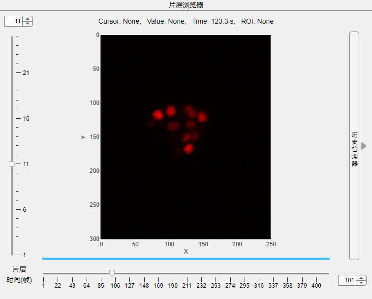
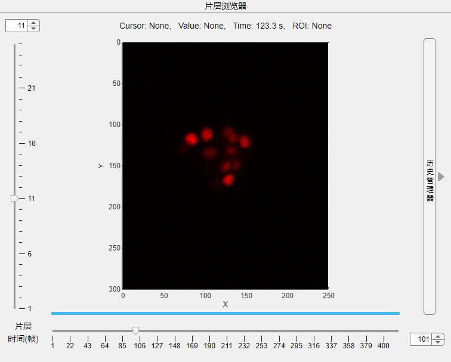

3.1 浏览器
 浏览器包括图像显示窗口与标题，标题中的信息包括当前鼠标位置、鼠标处像素值及ROI大小。 当前焦点位于浏览器主窗体时，如果并未合并源，您可以使用'Ctrl+Tab'快捷键组合在不同源间切换。

浏览器包括图像显示窗口与标题，标题中的信息包括当前鼠标位置、鼠标处像素值及ROI大小。 当前焦点位于浏览器主窗体时，如果并未合并源，您可以使用'Ctrl+Tab'快捷键组合在不同源间切换。